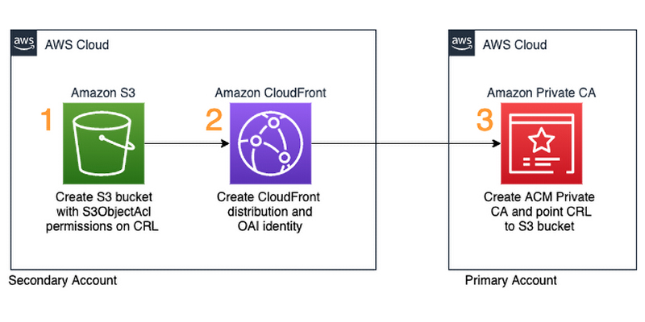
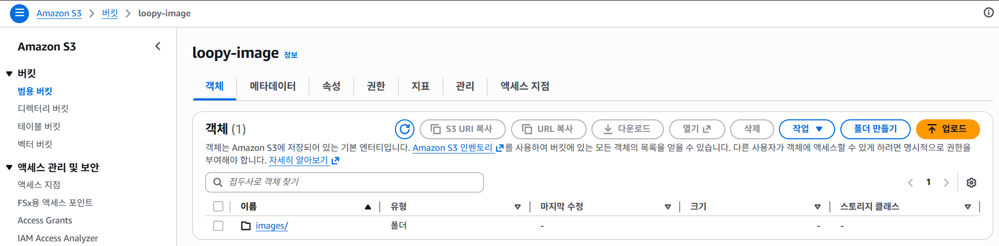
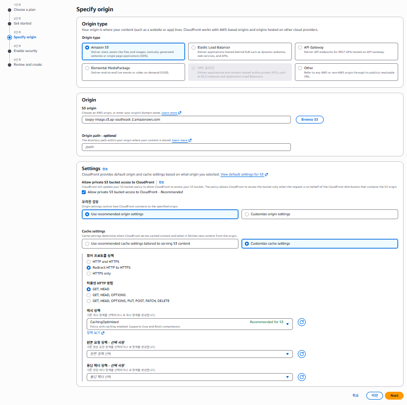
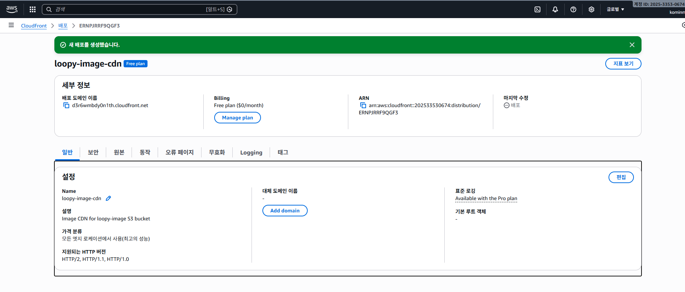
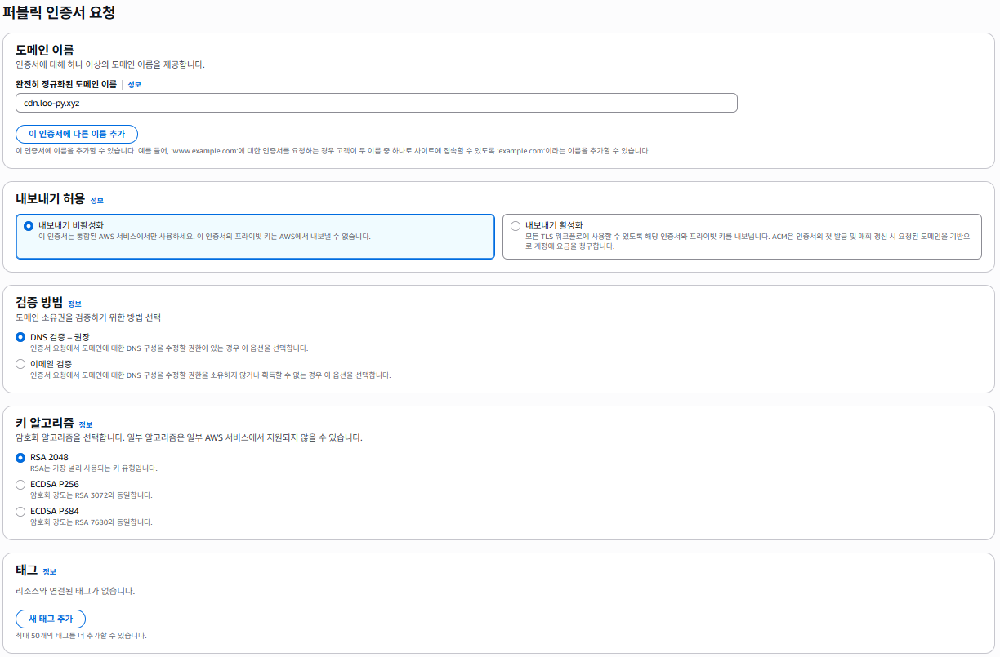

S3 + CloudFront + ACM 기반 CDN 아키텍처
프로젝트 배경
프로젝트에서 이미지와 동영상 같은 정적 파일을 저장하기 위해 AWS S3를 사용했습니다. S3는 설정이 간단하고 안정적인 스토리지라서 처음에는 단순하게 파일 저장소로 사용하기에 충분하다고 생각했습니다.
그래서 초기 구조는 매우 단순했습니다.
Client ↓ S3 Bucket
이미지 업로드와 조회는 문제없이 동작했고, 간단한 테스트 환경에서는 속도도 크게 느리지 않았습니다.
하지만 실제 서비스 환경에서 테스트를 진행하면서 몇 가지 아쉬운 점이 나타났습니다.
- 이미지 로딩 속도가 네트워크 환경에 따라 크게 달라짐
- 사용자 위치에 따라 체감 속도 차이 발생
- 동영상 재생 시 간헐적인 버퍼링 발생
특히 동영상의 경우 인터넷 환경이 좋지 않은 곳에서는 버퍼링이 발생했고, 재생 초기에 약간의 지연이 생기는 경우도 있었습니다. 물론 네트워크 환경의 영향도 있었지만, 단순히 S3에서 직접 파일을 가져오는 방식에는 한계가 있다는 것을 느꼈습니다.
이 문제를 해결하기 위해 CDN(Content Delivery Network)을 도입하여 다음과 같은 구조를 구성했습니다.
- S3 → 파일 저장
- CloudFront → CDN 캐싱
- ACM → HTTPS 인증서
- Gabia → 도메인 DNS 관리
전체 아키텍처
전체 구조는 다음과 같습니다.
사용자 ↓ CloudFront (CDN) ↓ S3 Bucket (이미지 저장)
CloudFront가 CDN 역할을 하면서 이미지 요청을 캐싱하고 S3는 실제 파일 저장소 역할을 합니다.
왜 CloudFront를 사용하는가
S3는 파일 저장소로 매우 훌륭하지만 CDN은 아닙니다.
CloudFront를 사용하면 다음과 같은 장점이 있습니다.
- 전 세계 Edge 서버 캐싱
- 이미지 로딩 속도 향상
- HTTPS 지원
- DDoS 보호
구축 순서
전체 구축 과정은 다음 순서로 진행했습니다.
- S3 버킷 생성
- CloudFront 배포 생성
- ACM 인증서 발급
- CloudFront에 도메인 연결
- Gabia DNS 설정
1. S3 버킷 생성
먼저 이미지 저장용 S3 버킷을 생성합니다.
이 버킷에는 서비스에서 사용하는 이미지 파일이 저장됩니다.

2. CloudFront 배포 생성
다음으로 CloudFront Distribution을 생성합니다.
Origin은 S3 버킷을 선택합니다.

CloudFront는 S3에서 이미지를 가져와 CDN 캐싱을 수행합니다.
CloudFront 주요 설정
- Origin : S3 Bucket
- Viewer protocol policy : Redirect HTTP to HTTPS
- Allowed HTTP methods : GET, HEAD
- Cache policy : CachingOptimized

3. ACM 인증서 발급
HTTPS 사용을 위해 AWS Certificate Manager에서 인증서를 발급합니다.
인증서 발급 과정에서는 도메인 소유권을 검증해야 합니다.

4. DNS 인증
ACM에서 제공하는 DNS 레코드를 도메인 DNS 관리 서비스에 등록해야 합니다.
저는 Gabia에서 도메인을 구매했기 때문에 Gabia DNS 관리에서 CNAME 레코드를 추가했습니다.
5. CloudFront에 도메인 연결
CloudFront 설정에서 Alternate Domain Name을 추가합니다.
예시
cdn.loo-py.xyz
그리고 ACM 인증서를 연결하면 HTTPS가 활성화됩니다.
최종 결과
이제 다음과 같은 URL로 이미지에 접근할 수 있습니다.
https://cdn.loo-py.xyz/image.png
사용자가 이미지를 요청하면
User → CloudFront → S3순서로 요청이 처리됩니다.
CloudFront는 이미지를 캐싱하기 때문에 다음 요청부터는 훨씬 빠르게 응답합니다.
정리
이번 글에서는 AWS 기반 CDN 아키텍처를 구축하는 과정을 정리했습니다.
- S3 → 파일 저장
- CloudFront → CDN 캐싱
- ACM → HTTPS 인증
- Gabia → DNS 관리
이 구조를 사용하면 대용량 이미지나 영상 파일을 안정적으로 서비스할 수 있습니다.